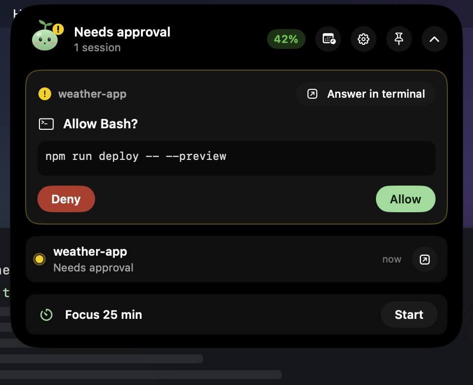
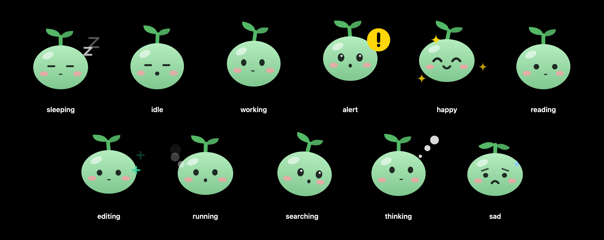
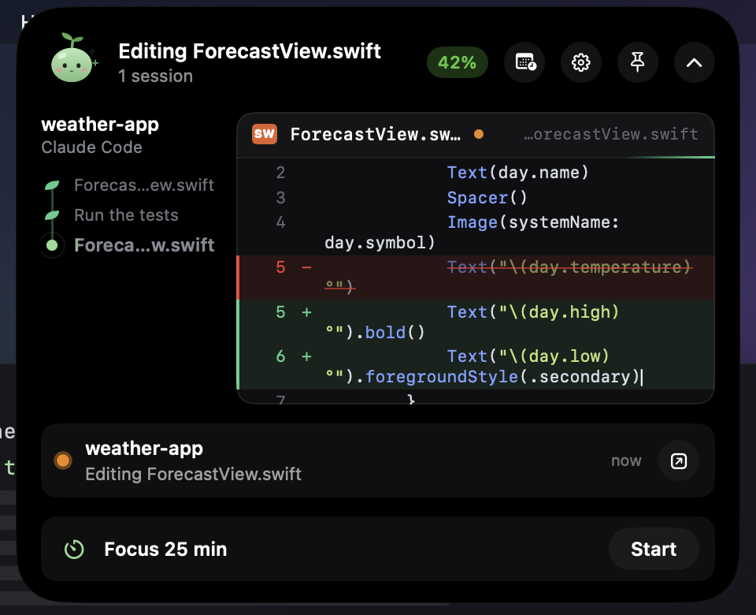

직접 보세요See it in action
노치 없는 Mac에서 음악과 에어팟, Claude Code 작업, 승인, 작업 완료 소식까지. 소리를 켜고 보세요.Music and AirPods, Claude Code at work, an approval and a finished task, on a Mac without a notch. Turn the sound on.
1분이면 설치 끝Set up in a minute
따로 가입하거나 로그인할 필요가 없어요. 이미 쓰고 있는 Claude Code 로그인을 그대로 씁니다. There's no new account to create. The app uses the Claude Code login you already have.
-
앱 내려받기Download the app
zip을 풀고 응용 프로그램 폴더로 옮기세요. 처음 열 때 경고가 뜨면 시스템 설정 → 개인정보 보호 및 보안에서 "그래도 열기"를 누르거나, 아래 명령을 실행하세요. Unzip it and move it to Applications. If macOS blocks the first launch, choose Open Anyway in System Settings → Privacy & Security, or run this command:
xattr -dr com.apple.quarantine "/Applications/Kongi.app" -
Claude Code에 로그인Sign in to Claude Code
터미널에서
claude를 실행해 Pro · Max · Team 계정으로 로그인하세요. 이미 쓰고 있다면 건너뛰어도 됩니다. Runclaudein Terminal and sign in with your Pro, Max or Team plan. Skip this if you already use Claude Code. -
연결 누르기Press Connect
메뉴 막대의 게이지를 클릭하고 연결을 누르면 끝이에요. 연결 해제도 설정에서 언제든 할 수 있습니다. Click the gauge in the menu bar and press Connect. You can disconnect anytime in Settings.
Claude Code를 아일랜드에서Claude Code, in the island
노치가 없어도 화면 맨 위 가운데에 떠 있다가, 마우스를 올리거나 확인이 필요할 때 펼쳐져요. 터미널을 찾아다닐 필요가 없어요.No notch needed: it floats at the top center of any screen and opens when you hover or when Claude needs you, so you don't have to hunt for the right terminal.
보고, 승인하고, 답하고Watch, approve, answer
고치는 코드는 한 글자씩 써지고, 읽는 파일은 줄이 차례로 나타나고, 단계는 줄기를 따라 자라요. 표와 코드 블록까지 대화를 읽고 바로 답할 수 있어요. 권한 요청은 허용 · 거부 · 항상 허용으로, Claude의 선택형 질문은 단일·복수 선택이나 직접 입력으로 바로 답해요. 바뀐 파일은 +N / −N과 diff로 확인하고, 버튼 하나로 그 세션의 터미널로 이동해요. Follow each session live: code being written types itself out, files being read scroll in, and every step grows along a little stem. Read the conversation with tables and code blocks, and reply right there. Answer permission requests with Allow, Deny or Always, and Claude's multiple-choice questions with one or more options or your own answer. Check changed files with +N / −N counts and diffs, and jump to that session's terminal in one click.

콩이가 알려 줘요Kongi keeps you posted
새싹 강낭콩 콩이는 Claude가 읽으면 눈으로 줄을 따라가고, 고치면 통통거리고, 명령을 실행하면 뛰고, 생각하면 생각 방울을 띄워요. 확인이 필요하면 놀라고, 끝나면 기뻐하고, 실패하면 시무룩해요. 누르면 하트가 떠올라요. Kongi, a little bean sprout, follows the lines when Claude reads, bounces while it edits, jogs while commands run and blows thought bubbles while it thinks. Kongi perks up when Claude needs you, cheers when the work is done and droops when a command fails. Tap for a heart.

Claude만이 아니에요More than Claude
음악(Apple Music · Spotify), 에어팟 연결과 배터리, 볼륨, 충전, 작업 완료와 회의 소식, 집중 타이머, 시스템 상태까지. 음악과 Claude Code를 아이폰처럼 나란히 띄워요. Music from Apple Music and Spotify, AirPods with battery levels, volume, charging, notices for finished tasks and upcoming meetings, a focus timer and system stats. Music and Claude Code sit side by side, like on iPhone.

한도가 초기화되면 알아서 이어서Pick up right after a reset
5시간 세션이나 주간 한도가 초기화되는 순간, 또는 정한 시각에 프로젝트에서 Claude Code로 프롬프트를 보내요. 1회 또는 반복으로 정할 수 있고, 한도에 닿으면 아일랜드가 "초기화되면 이어서 하기"를 바로 제안해요. Send a prompt to Claude Code in a project the moment your session or weekly limit resets, or at a time you choose, once or every time. When you hit a limit, the island offers to continue after the reset.
메뉴 막대에 보일 내용을 고르세요Choose what the menu bar shows
세션과 주간 사용률을 함께 보거나, 초기화까지 남은 시간을 보거나, 게이지만 조용히 둘 수도 있어요. 사용률이 90%를 넘으면 게이지가 빨간색으로 바뀝니다. Show session and weekly usage together, the time until the session resets, or just the gauge. The gauge turns red once you pass 90%.
알림은 원하는 대로Alerts on your terms
몇 %에서 알릴지, 초기화 몇 분 전에 알릴지 직접 정하세요. 한도가 다시 채워지는 순간과 Claude에 장애가 생겼을 때도 알려 드리고, 지금 속도면 언제 한도에 닿는지 미리 계산해 보여 줍니다. Pick the percentages that trigger an alert and how many minutes before a reset you want a reminder. You can also get notified the moment a limit refills or when Claude has an outage, and see when you'll hit the limit at your current pace.
11개 언어로 쓸 수 있어요Speaks 11 languages
시스템 언어를 자동으로 따르고, 설정에서 바로 바꿀 수도 있습니다. It follows your system language, and you can switch in Settings.
English한국어日本語简体中文繁體中文EspañolFrançaisDeutschItalianoPortuguêsРусский
휴대폰에서도On your phone, too
아이폰 앱도 만들 계획이에요. 지금은 안드로이드용 Kongi로 Mac과 같은 Wi-Fi에서 승인하고, 세션을 따라가고, 메시지를 보내요. QR 코드 한 번이면 연결되고, 모든 내용은 두 기기에만 있는 키로 암호화돼요. 중간 서버는 없어요.An iPhone app is planned. For now, with Kongi for Android, approve requests, follow sessions and send messages over the same Wi-Fi as your Mac. Pair once with a QR code; everything is encrypted with a key that only your two devices have. There's no server in between.
알림에서 바로 허용Allow right from a notification
앱을 닫아 둬도 승인 요청이 알림으로 오고, 허용·거부 버튼으로 바로 답해요. 단계가 자라는 세션 목록, 마크다운 대화, 바뀐 파일도 휴대폰에서 봐요.Even with the app closed, approval requests arrive as notifications with Allow and Deny buttons. Sessions grow step by step, conversations show full Markdown, and changed files are a tap away.
내 계정은 내 Mac에만Your account stays on your Mac
소스 코드가 모두 공개되어 있어 직접 확인할 수 있습니다.Every line of the source is public, so you can check for yourself.
Anthropic으로만 전송Sent only to Anthropic
로그인 정보는 사용량을 불러올 때 api.anthropic.com에만 보냅니다. 그 밖에는 계정 정보 없이 공개 상태 페이지만 확인하고, 분석 도구는 쓰지 않아요.Your login is only sent to api.anthropic.com to fetch usage. Apart from that, the app only checks the public status page with no account data, and there are no analytics.
읽기만 합니다Read-only
Claude Code의 로그인을 읽기만 하고 바꾸지 않아서, Claude Code 사용에 영향을 주지 않습니다.The app reads the Claude Code login but never changes it, so Claude Code keeps working exactly as before.
언제든 연결 해제Disconnect anytime
설정에서 연결 해제를 누르면 조회를 멈추고, 앱에 있던 사용량과 계정 정보를 모두 지웁니다.Press Disconnect in Settings to stop checking and clear all usage and account data from the app.
자주 묻는 질문Questions and answers
노치 없는 Mac에서도 쓸 수 있나요?
네, 오히려 그런 Mac을 위해 먼저 만들었어요. 노치에 맞춘 맥북용 업데이트도 준비하고 있어요. 맥 미니, 맥 스튜디오, 아이맥, 외장 모니터에서는 아일랜드가 메뉴 막대 가운데에 떠 있고, 노치 있는 맥북에서는 노치를 감싸듯 자리 잡아요.
안드로이드 휴대폰에서도 쓸 수 있나요?
네. 아이폰 앱도 만들 계획이에요. 안드로이드용 Kongi(APK)를 설치하고 Mac의 설정 → 휴대폰에서 QR 코드를 찍으면, 같은 Wi-Fi에서 승인·세션 보기·메시지 보내기를 할 수 있어요. 내용은 두 기기에만 있는 키로 암호화돼요.
Kongi는 무엇인가요?
Claude 사용량을 macOS 메뉴 막대에 보여 주고, Claude Code가 하는 일을 화면 맨 위 다이나믹 아일랜드에 보여 주는 무료 오픈소스 앱입니다. 아일랜드에서 권한 요청을 승인하고, Claude의 질문에 답하고, 코드 변경 내역을 보고, 해당 터미널로 이동할 수 있어요.
Claude 한도가 초기화되면 자동으로 프롬프트를 보낼 수 있나요?
네. 예약 프롬프트로 5시간 세션이나 주간 한도가 초기화된 직후, 또는 정한 시각에 프로젝트에서 Claude Code로 프롬프트를 보낼 수 있어요. 1회 또는 반복으로 설정할 수 있고, 한도에 닿으면 아일랜드가 '초기화되면 이어서 하기'를 제안합니다.
Kongi를 쓰면 Claude 사용량이 더 드나요?
아니요. 사용량 표시와 아일랜드는 Claude 사용량을 쓰지 않아요. 예약 프롬프트를 실행할 때만 직접 입력한 것과 똑같이 사용량이 듭니다.
알림 기준을 바꿀 수 있나요?
네. 설정에서 알림을 보낼 사용률(예: 85%, 90%)을 직접 추가하거나 지울 수 있고, 초기화 몇 분 전에 알릴지, 한도가 초기화되는 순간에도 알릴지 정할 수 있습니다.
Claude가 느리거나 안 될 때 장애인지 어떻게 알 수 있나요?
Kongi는 Claude 공식 상태 페이지(status.claude.com)를 함께 확인해서, 장애가 있으면 팝오버에 배너를 띄우고 알림을 보냅니다. 내 쪽 문제인지 Claude 쪽 문제인지 바로 알 수 있어요.
Claude 사용량(사용 한도)은 어떻게 확인하나요?
Claude Code에서 /usage 명령을 실행하거나 claude.ai 설정의 사용량 화면에서 볼 수 있습니다. Kongi를 설치하면 현재 세션과 주간 한도 사용률이 macOS 메뉴 막대에 늘 표시되어, 따로 확인하러 가지 않아도 됩니다.
Claude의 5시간 한도는 언제 초기화되나요?
Claude 구독 플랜의 세션 한도는 5시간 단위로 초기화됩니다. Kongi는 정확한 초기화 시각과 남은 시간을 보여 주고, 원하면 초기화 5분에서 60분 전에 알림을 보냅니다.
Claude 주간 한도는 무엇인가요?
세션 한도와 별도로 7일 단위로 적용되는 사용 한도입니다. 플랜에 따라 모든 모델 공통 한도 외에 Opus나 Sonnet 전용 주간 한도가 따로 있을 수 있으며, Kongi는 계정에 적용되는 주간 한도를 모두 표시합니다.
claude.ai 웹과 데스크톱 앱 사용량도 포함되나요?
네. Claude 구독의 사용 한도는 claude.ai, Claude 데스크톱 앱, Claude Code가 함께 쓰기 때문에 Kongi에 보이는 수치가 전체 사용량입니다. 이번 주 사용량이 어디서 나왔는지(Claude Code, 채팅, Cowork)도 비율로 보여 줍니다.
Claude Code 없이도 쓸 수 있나요?
아니요. Kongi는 Claude Code에 저장된 로그인을 사용하므로, Claude 구독(Pro, Max, Team) 계정으로 Claude Code에 한 번 로그인해 두어야 합니다.
안전한가요? 내 계정 정보는 어디로 가나요?
로그인 토큰은 사용량을 불러올 때 Anthropic 서버(api.anthropic.com)에만 전송됩니다. 그 밖에는 계정 정보 없이 공개 상태 페이지(status.claude.com)만 확인하고, 분석 도구는 쓰지 않습니다. Claude Code 로그인은 읽기만 하고 바꾸지 않으며, 소스 코드가 모두 GitHub에 공개되어 있습니다.
무료인가요? 어떤 Mac에서 쓸 수 있나요?
무료 오픈소스(MIT 라이선스)입니다. macOS 13 Ventura 이상에서 동작하며 Apple Silicon과 Intel Mac을 모두 지원합니다.
Does it work on Macs without a notch?
Yes, that's who it was made for first, and a MacBook update tuned for the notch is planned. On Mac mini, Mac Studio, iMac and external displays the island floats at the top center of the menu bar; on notched MacBooks it wraps around the notch.
Is there a phone app?
Yes, for Android now, with an iPhone app planned. Install Kongi for Android (APK), scan the QR code in Settings → Phone on your Mac, and you can approve requests, follow sessions and send messages over the same Wi-Fi. Everything is encrypted with a key only your two devices have.
What is Kongi?
A free, open-source Mac app that shows your Claude usage in the menu bar and what Claude Code is doing in a Dynamic Island–style panel at the top of the screen. From the island you can approve permission requests, answer Claude's questions, review code changes and jump to the session's terminal.
Can I send a prompt automatically when my Claude limit resets?
Yes. Scheduled prompts send a prompt to Claude Code in a project right after your session or weekly limit resets, or at a time you choose, once or every time. When you hit a limit, the island offers to continue after the reset.
Does Kongi use extra Claude usage?
No. Showing usage and the island don't use any Claude usage. Only scheduled prompts do, exactly like a prompt you type yourself.
Can I change when I get alerts?
Yes. In Settings you can add or remove the usage percentages that trigger an alert (for example 85% and 90%), choose how many minutes before a reset to be reminded, and get notified the moment a limit resets.
How can I tell if Claude is down?
Kongi also checks the official Claude status page (status.claude.com). When there's an incident, it shows a banner in the popover and sends a notification, so you know whether the problem is on your side or Claude's.
How do I check my Claude usage limits?
Run /usage in Claude Code, or open the usage page in claude.ai settings. With Kongi installed, your current session and weekly limit usage stays visible in the macOS menu bar, so you never have to go looking.
When does Claude's 5-hour limit reset?
Session limits on Claude subscription plans reset in 5-hour windows. Kongi shows the exact reset time and the time remaining, and can remind you 5 to 60 minutes before the reset.
What is Claude's weekly limit?
It's a usage limit applied over 7 days, separate from the session limit. Depending on your plan there may be a separate weekly limit for Opus or Sonnet in addition to the all-models limit. Kongi shows every weekly limit that applies to your account.
Does it include usage from claude.ai and the desktop app?
Yes. Claude subscription limits are shared across claude.ai, the Claude desktop app and Claude Code, so the numbers in Kongi are your total usage. It also shows where this week's usage came from: Claude Code, chat or Cowork.
Can I use it without Claude Code?
No. Kongi uses the login saved by Claude Code, so you need to sign in to Claude Code once with a Claude Pro, Max or Team plan.
Is it safe? Where does my account data go?
Your login token is only sent to Anthropic (api.anthropic.com) to fetch usage. Apart from that, the app only checks the public status page (status.claude.com) without any account data, and there are no analytics. The app reads the Claude Code login without changing it, and all of the source code is public on GitHub.
Is it free? Which Macs does it support?
It's free and open source under the MIT License. It runs on macOS 13 Ventura or later, on both Apple silicon and Intel Macs.